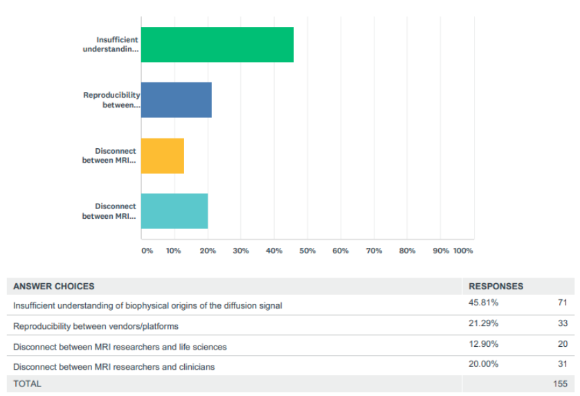
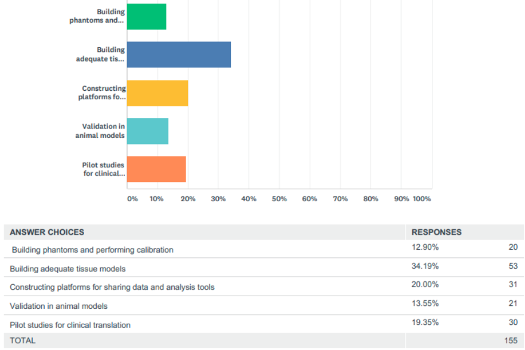

To wrap up our series on Diffusion Without Equations, we asked the community about the field’s current needs, as well as the future of diffusion MRI. You can find the original survey questions here.
Of the 155 participants, 26.5% had a biomedical engineering background, 22.6% were from computer science, 25.8% physics, and the rest came from biology, medicine, psychology, and other disciplines. Here is what they had to say!
Though diffusion MRI (dMRI) has evolved significantly since the seminal work by Stejskal and Tanner (as discussed in Part 1 of the series), it is clear that the community believes that the field is still growing. When asked whether the field of dMRI has peaked, 81.9% of the responders answered that the future is promising and dMRI has not reached its peak yet. Only 2.58% answered that diffusion MRI has already peaked, while 15.5% believe the field is currently at its peak.
There is a larger debate, however, on what the biggest problem in dMRI is. Figure 1 highlights the responses. Most participants (45.8%) chose “insufficient understanding of biophysical origins of the diffusion signal”, and 21.29% responded with “reproducibility between scanners/platforms”. The remaining responses referred to a disconnect in the field, with 20% favoring “disconnect between researchers and clinicians”, and 12.90% emphasizing the “disconnect between MRI researchers and life sciences”.

As for what the focus of dMRI should be in research methodology (Figure 2), the results were consistent with the previous question. 34.19% chose “building adequate tissue models”, while “constructing platforms for sharing data and analysis tools” and “pilot studies for clinical translation” were close runners-up.

How does all of this translate to the clinic? Dmitry Novikov succinctly states, “The dMRI future is bright – which is equivalent to saying that we as a community still have a long way to go.” Quantitative diffusion in the clinic still has to overcome several problems (Figure 3), with confusion in interpretation (36.2%), reliability in results (30.9%) and long acquisition times (18.7%) being the biggest ones.
From the open comments (listed at the end of the feature), there seem to be three overarching themes that people keep coming back to: 1) the development of biophysical models, 2) translation of techniques to the clinic, and 3) the role of advanced technology.
Development of biophysical models
In the past decade or so, there has been a focus on the development of biophysical models (NODDI, CHARMED, DBSI, WMTI, etc.) to characterize microstructural properties such as axonal volume fractions. Muhamed Barakovic states, “dMRI is so popular because it has enormous potential to probe tissue microstructure.” While these models have demonstrated promise, the community still aims for specificity rather than sensitivity, as phrased by Itamar Ronen: “The future of diffusion MRI will highly depend on its ability to resolve some of its most burning problems and one of them is that of compartmental specificity.” However, despite this challenge, the community still remains hopeful. One person comments anonymously, “Diffusion MRI will be at his peak when we will find a model really close to the reality of the microstructure.” Dmitry Novikov also agrees, believing that once we “understand the biophysical mechanisms of the signal at the cellular level […] amazing unforeseen applications will inevitably come.”
Translation to the clinic
While adoption in the clinic is one of the ultimate goals for any method, several people had thoughts on the current barriers preventing dMRI from making this step. One person anonymously states, “The biggest problem I encountered, working with diffusion MRI of the brain, is the lack of trust from clinicians in the results provided by the analysis of this kind of data. Some researchers stick to the classical DTI model and do not accept further advances in image processing, such as tractography and connectomics results, some others are very much concerned by the known limitations of DWI processing and analysis, often refusing to accept the interpretation of related findings.”
While some believe this lack of trust from clinicians may stem from “clinicians’ hatred of math”, Thijs Dhollander believes that “we need to start exploring how we can translate more than just ADC and simplistic tractography to the clinic.” To do so, the community feels that “actual validation on the neuronal tissue in several disease conditions is needed for current and future dMRI studies”, as stated by Masaaki Hori. Along these lines, one person believes that a major research focus should be on showing that some of the existing methods already have potential, stating “If we do not do so, we will never convince clinicians of integrating diffusion MRI tools in their clinical routine.” It is hard to say where clinical diffusion will be in the future, but most of the community share the same hope as Simon Lévy: “I’m not sure where diffusion MRI will be in 10 years but my guess (and wish) is that one (maybe two) advanced microstructure/macrostructure-specific and sensitive technique will have taken over the others in clinics.”
Role of advanced technology
Lastly, some of the responders discussed the role of advanced technology in the future of diffusion MRI. Tim Dyrby states: “Diffusion is popular because the physical image contrast is ‘easy’ to understand but its complexity [spans] many levels like a fractal, from theory, computer science, engineering to clinic. Thinking as a single modality, diffusion will not be the sole solution. The community must continue breaking down barriers and work multimodal and multi disciplinary.” JJ Wang believes that deep learning may play a large role in the future of diffusion MRI: “With deep learning, we might be able to use diffusion MRI to diagnose diseases which previously are based on clinical judgement (such as neurodegenerative disease). This might further change the process of clinical trials, speed up the development of new drugs.”
Outlook
Many people feel that in 10 years diffusion will be standardized, validated, and adopted by hospitals. In the meantime, we should work on bringing together the connectivity and microstructure “camps”, as one anonymous responder suggested, and do our best to prove the value of diffusion imaging to the clinicians. Despite the challenges the field is facing, the overall sentiment in the survey was optimistic, as nicely summarized by one person stating: “There is beauty in this!”. This sentiment is shared by Valerij Kiselev, who sees diffusion imaging as “real physics, an adventure of knowledge, never boring.” Let’s keep the excitement going!
We thank everyone for their feedback! Below is a selection of comments from the survey, published with permission.
Read the survey comments
Other applications (than neuro)
Diffusion and IVIM MRI, as a biomarker to evaluate tissue microstructure and perfusion without the need of contrast agents, will gain further momentum especially in the field of oncology in the clinical setting. Diffusion MR study group might pay more attention to this point. Mami Iima
Applications of DWI outside the brain are in their infancy. Even this survey is neuro-focused, as is the diffusion study group. Probably not polite to suggest a reason for this bias. Roger Bourne
Multi-modality / Deep learning
It provides a possible non-invasive probe into the structural feature of my interest. Diffusion is popular because the physical image contrast is ‘easy’ to understand but its complexity spans many levels like a fractal, from theory, computer science, engineering to clinic. Thinking as a single modality, diffusion will not be the sole solution. The community must continue breaking down barriers and work multimodal and multi disciplinary. Tim Dyrby
It is easy to use and produce results with high sensitivity, almost comparable to PET. With deep learning, we might be able to use diffusion MRI to diagnose diseases which previously were based on clinical judgement (such as neurodegenerative disease). This might further change the process of clinical trials, speed up the development of new drugs. JJ Wang
Diffusion MRI is the perfect combination of beautiful physics, maths and biology. What else would anyone want? On another note, I think multidimensional diffusion MRI is one of the most promising approaches for the future of diffusion MRI! Alexis Reymbaut
Study in pathologies
Many advanced diffusion MR imaging (dMRI) data acquisition, analysis and models have been introduced. But there is a discrepancy between the disease condition and the models, based on normal brain. Therefore, actual validation on the neuronal tissue in several disease condition is needed for current and future dMRI studies, as well as more dedicated methodology for dMRI. Sincerely, Masaaki Hori
What attracts me: It’s real physics, an adventure of knowledge, never boring. Why so popular: It promises something like in-vivo histology (!!!). What will be in 10 years, I think not only in the brain. Valerij Kiselev
Diffusion is popular because the data obtained provides insight into brain structure non-invasively. In 10 years, I hope we have developed DWI to be a more routine tool so that we can focus on using the tool to study brain structure and function at higher resolution with greater and more reliable information content. Tom Mareci
Understanding biophysical origins of the diffusion signal / Building adequate tissue models